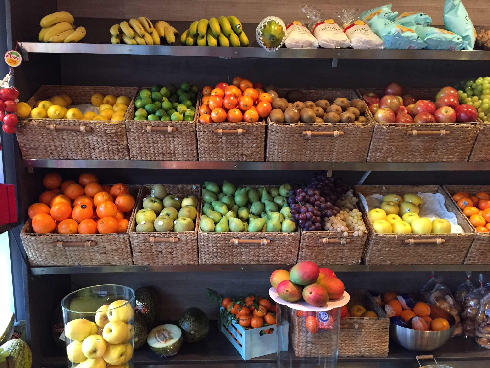

La Fruteria - Tu sitio para Comprar Fruta Online
Si quieres comprar fruta online somos la mejor opción para ti. Bienvenidos a La Frutería, donde podrás encontrar productos frescos, con calidad certificada. Recuerda que las frutas y los vegetales son la principal fuente de nutrientes diaria, adquirirlos frescos es necesario.Sabemos que hoy en día todos están muy atareados entre el trabajo y la familia, por eso la mejor opción para los que tienen un día a día muy ocupado es comprar fruta online, no hay necesidad que abras espacio en tu agenda para ir al mercado a hacer compras de frutas y verduras, tenemos los mejores productos para ti, frescos y de la mejor calidad. Conseguirás los más frescos dependiendo de la estación.
Nuestros servicios
Aparte de la frescura de nuestros productos, La Frutería ofrece otros beneficios como la posibilidad de pagar con tarjeta de débito o crédito, inclusive con PayPal; además del transporte rápido, frutas locales y de otras regiones del mundo, ofertas y los mejores precios. Puedes usar nuestro servicio de envíos gratuitos a partir de 39 euros la compra. Te recomendamos visitar nuestra sección de Frutos Secos para completar tu pedido hasta 39€ con almendras, nueces, y otros productos no perecederos. Comprar es muy sencillo, escoges los productos, la cantidad que deseas y los añades al carrito, luego pagas y entregaremos tu compra a la dirección que tu nos digas, y gratis.